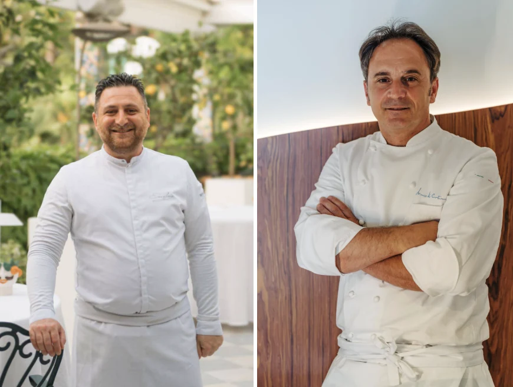
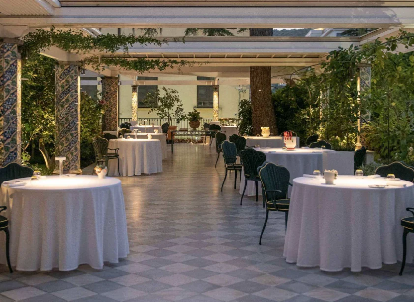

Incontri a tavola · Zest Sorrento
Zest & Friends: il dialogo tra Ischia e Sorrento.
Domenico Iavarone e Nino Di Costanzo, due percorsi della cucina campana alla stessa tavola.
Evento del · Sorrento, Italia

Il programma di Zest & Friends del 5 ottobre 2026 porta a Sorrento un incontro tra Domenico Iavarone e Nino Di Costanzo, chef del Danì Maison di Ischia. La cornice è Zest, il ristorante del Grand Hotel La Favorita.
Due sguardi sulla Campania
Una cena a quattro mani costruita intorno a percorsi diversi e a un territorio comune. Il mare e gli ingredienti campani diventano il punto di partenza per un confronto tra le due cucine.
Nel menu annunciato, le preparazioni di pesce di Di Costanzo incontrano i primi e l’agnello di Iavarone. L’abbinamento con Champagne Palmer accompagna il percorso.

Zest & Friends apre così il ristorante all’incontro con altre visioni gastronomiche, mantenendo al centro il carattere della propria ospitalità.
Fotografie pubblicate da Foodmakers nell’articolo dedicato all’evento.
Fonte e approfondimento: Foodmakers